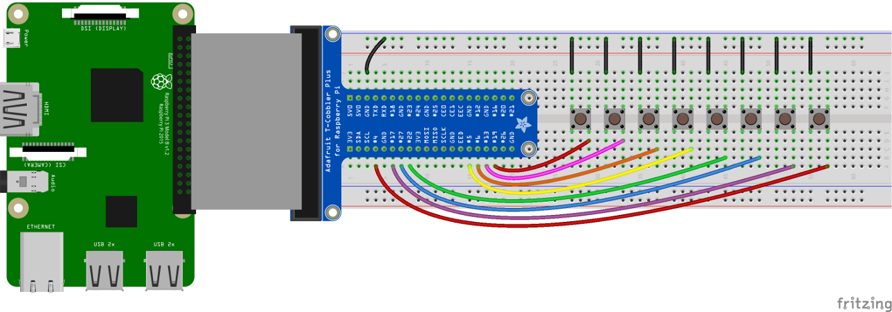

Licenca
To delo je na voljo pod pogoji slovenske licence Creative Commons 2.5:
priznanje avtorstva - nekomercialno - deljenje pod enakimi pogoji.
Celotna licenca je na voljo na spletu na naslovu http://creativecommons.org/licenses/by-nc-sa/2.5/si/. V skladu s to licenco je dovoljeno vsakemu uporabniku delo razmnoževati, distribuirati, javno priobčevati, dajati v najem in tudi predelovati, vendar samo v nekomercialne namene in ob pogoju, da navede avtorja oziroma avtorje in izdajatelja tega dela. Če uporabnik delo predela, kar pomeni, da ga spremeni, preoblikuje, prevede ali uporabi to delo v svojem delu, lahko predelavo dela ponudi na voljo le pod pogoji, ki so enaki pogojem iz te licence oziroma pod enako licenco.

Izdelava ksilofona
Zadnja naloga pri projektu glasbene skrinjice bo izdelava Malinine različice otroškega ksilofona. To pomeni, da boš na preizkusno ploščico dodal/-a osem gumbov in jih sprogramiral/-a tako, da se bo ob pritisku na posamezen gumb predvajal zvoke posameznih tonov, ki jih lahko zaigraš na otroškem ksilofonu.
Strojna oprema
- 1 Malina
- 1 preizkusna ploščica (angl. breadboard)
- 1 zatič oblike T s kablom (angl. T-cobbler with breakout cable)
- 8 pritisnih gumbov (angl. tactile switch)
- 8 uporov 10 kΩ
- vtične žičke moški-moški (angl. jumper wire male-to-male)
Programska oprema
Navodila
- Poveži Malinine GPIO nožice in preizkusno ploščico s pomočjo T-zatiča in kabla.
- Poveži vse gumbe z nožico GND in nožicami GPIO 4, GPIO 17, GPIO 22 in GPIO 27
ter GPIO 5, GPIO 6, GPIO 13 in GPIO 19 (glej zavihek Vezje). - Odpri IDLE in ustvari novo datoteko tako, da klikneš File > New file.
- Shrani novo datoteko tako, da klikneš File > Save. Datoteki daj ime
ksilofon.py. - V isto mapo shrani tudi zvočne datoteke c1.wav, d1.wav, e1.wav, f1.wav, g1.wav, a1.wav, b1.wav in c2.wav.
- V datoteko
ksilofon.pyvnesi kodo z zavihka Koda. - Shrani kodo s Ctrl+S in jo nato zaženi s F5.
- Izmenično pritiskaj gumbe in zaslišati bi moral/-a zvoke posameznih tonov otroškega ksilofona.
- Na naslednji strani lahko najdeš nekaj primerov skladbic, ki jih lahko zaigraš na Malinin ksilofon.
z nožicami GPIO 18, GPIO 23, GPIO 24 in GPIO 25.

from gpiozero import Button
import pygame
pygame.init()
gumb_c1 = Button(19) # ali Button(25)
gumb_d1 = Button(13) # ali Button(24)
gumb_e1 = Button(6) # ali Button(23)
gumb_f1 = Button(5) # ali Button(18)
gumb_g1 = Button(22)
gumb_a1 = Button(27)
gumb_h1 = Button(17)
gumb_c2 = Button(4)
ton_c1 = pygame.mixer.Sound('c1.wav')
ton_d1 = pygame.mixer.Sound('d1.wav')
ton_e1 = pygame.mixer.Sound('e1.wav')
ton_f1 = pygame.mixer.Sound('f1.wav')
ton_g1 = pygame.mixer.Sound('g1.wav')
ton_a1 = pygame.mixer.Sound('a1.wav')
ton_h1 = pygame.mixer.Sound('b1.wav')
ton_c2 = pygame.mixer.Sound('c2.wav')
gumb_c1.when_pressed = ton_c1.play()
gumb_d1.when_pressed = ton_d1.play()
gumb_e1.when_pressed = ton_e1.play()
gumb_f1.when_pressed = ton_f1.play()
gumb_g1.when_pressed = ton_g1.play()
gumb_a1.when_pressed = ton_a1.play()
gumb_h1.when_pressed = ton_h1.play()
gumb_c2.when_pressed = ton_c1.play()